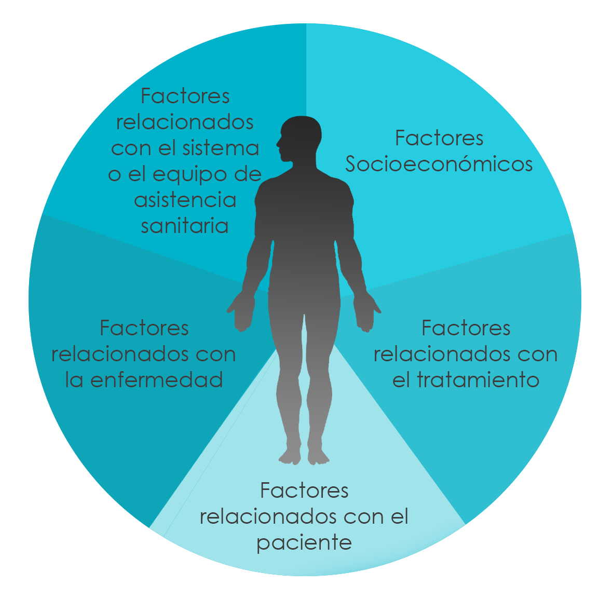

¿QUE ES LA ADHERENCIA TERAPÉUTICA?
"Es el grado en que el comportamiento de una persona (tomar el medicamento, seguir un régimen alimentario y ejecutar cambios del modo de vida) se corresponde con las recomendaciones acordadas de un prestador de asistencia sanitaria." Haynes y Rand.

Las cinco dimensiones deben considerarse según OMS en una exploración sistemática de los factores que influyen sobre la adherencia y las intervenciones dirigidas a mejorarla.
¿ADHERENCIA DEFICIENTE?
Según la Organización Mundial de la Salud (OMS) el 50% de los pacientes que padecen enfermedades crónicas no presentan adherencia al tratamiento farmacológico. Para mejorar la adherencia al tratamiento de las enfermedades crónicas se han desarrollado principalmente intervenciones focalizadas en aspectos educativos, conductuales y combinadas, teniendo en cuenta el aspecto psicológico, la relación médico – paciente entre otros.
-
Aspecto importante:
- • Problema mundial y de alarmante magnitud
- • Bajos resultados de salud y mayores costos sanitarios
- • Los pacientes necesitan apoyo y no que se los culpe
- • Mejorar la adherencia aumenta la seguridad de los pacientes.
- • La adherencia terapéutica es un modificador importante de la efectividad del sistema de salud.
¿COMO SE MIDE LA ADHERENCIA TERAPÉUTICA?
Métodos directos (análisis clínico) invasivos Métodos Indirectos
¿QUE ES SIAT?
SISTEMA INTEGRAL DE ADHERENCIA TERAPÉUTICA es un ecosistema de tecnologías aplicada a las 5 dimensiones de exploración según la OMS con el objetivo de mejorar el grado de adherencia terapéutica de las diferentes enfermedades crónicas. El desarrollo científico y tecnológico ha permitido desde la última década, la aplicación de las tecnologías de la información y comunicación (TIC) en el área de Salud, siendo herramientas novedosas en la búsqueda de mejorar la adherencia al tratamiento de las enfermedades. El uso de las TIC ha sido bien aceptado por médicos especialistas y también por los pacientes que padecen enfermedades crónicas para aumentar su seguimiento, interacción médico-paciente y generar un monitoreo con trazabilidad del tratamiento en tiempo real.
¿QUIENES SOMOS?
Somos un equipo multidisciplinar de personas, con diferentes formaciones académicas y experiencias profesionales, que operan en conjunto, con un objetivo en común mejorar la calidad de vida del paciente por medio de una vision integral de la salud y el uso de las tecnologías.
¿POR QUE SIAT? Beneficios del Sistema
“Los pacientes que aceptan su enfermedad, que entienden su carácter crónico y que están mejor informados, son los mejores pacientes y obtienen mayores beneficios del tratamiento, ya que tienen una buena adherencia y aprenden a cuidarse y a convivir con su enfermedad lo que hace que se logre un mayor entendimiento con el médico y que se produzca un diálogo inteligente para conseguir mejores resultados”. Dr Miquel Ribera Pibernat, Hospital Parc Taulí de Sabadell BARCELONA
Al dejar de tomar el paciente los medicamentos prescriptos, el Laboratorio disminuye sus ventas. Los programas de adherencia ahorran ese costo en un porcentaje del 30% al 40% dependiendo del producto y la patología. A modo de ejemplo, si la adherencia en Osteoporosis en mujeres posmenopáusicas es del 50% a los 12 meses de tratamiento; los programas de adherencia pueden llevar la adherencia al 80% o 90% en similar periodo de tiempo. Ese porcentual es lo que el laboratorio recupera en sus ventas.
CASO DE ESTUDIO
Aplicación del sistema SIAT a una población de 18 pacientes que padecen hemofilia para la Obra social Unión Personal. El objetivo es medir y monitorear en tiempo real el grado de adherencia terapéutica al tratamiento de profilaxis y bajo demanda de los factores de coagulación.
Las tecnologías utilizadas cubrirán las siguientes funciones: capacitación del paciente (e-learning 360) , alertas de aplicación, alertas de retrasos, herramientas de interacciones médico-paciente, SMS, llamadas, auto test de medición de AT, historia clínica digital, prescripción digital, gestión de documentos para reintegros SUR.